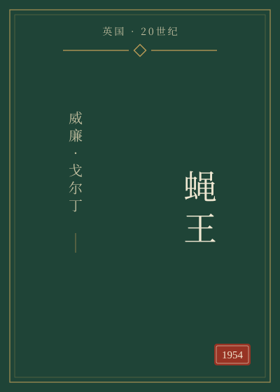
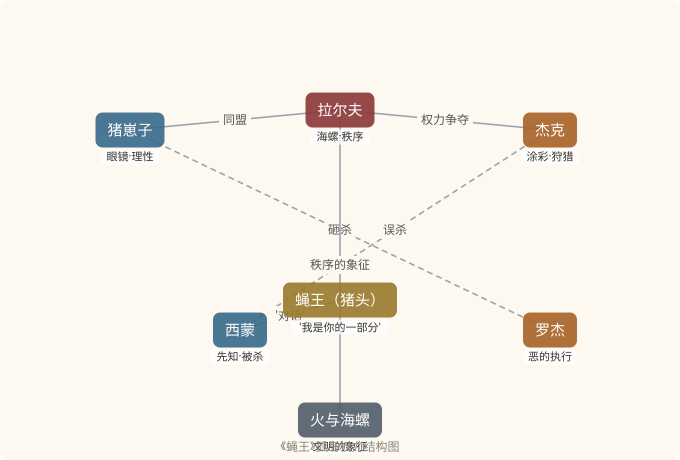

蝇王
一、基本信息
| 作者 | 戈尔丁 |
|---|---|
| 成书/出版 | 1954年出版（Britannica） William Golding — Encyclopaedia Britannica（百科全书） |
| 国别/地区 | 英国 |
| 时代 | 现当代 · 20世纪 |
| 体裁 | 长篇小说（寓言） |
| 语言 | 英语 |

《蝇王》孤岛权力结构图（人物关系图）
二、创作背景
反写《珊瑚岛》（Ballantyne 1858，通说待核）：R.M. Ballantyne 的《珊瑚岛》写'文明男孩荒岛创文明'——戈尔丁以学童'退化为野蛮人'（Britannica：schoolboys on a coral island who 'revert to savagery'）反写。
二战经验：皇家海军与'俾斯麦行动与D日'（Britannica）——'人心之恶'的战场体认（通说）。
书名：'Beelzebub'（蝇王——'苍蝇之王'）希伯来语 Ba'al-zevuv（通说待核）。
三、内容脉络
坠机孤岛：核战疏散中飞机坠落，一群6—12岁英国男孩无人岛上'自治'——拉尔夫（海螺=秩序）当选领袖，杰克（唱诗班领袖=猎野猪）不服（通说）。
秩序的崩解：' Beastie'（怪兽）传说起；猪崽子的'眼镜'取火；狩猎、涂彩、狂欢——西蒙'与蝇王对话'（蝇王是钉在木桩上的猪头——'我是你的一部分'原文意，待核）被踩死（通说）。
杀人与追杀：狩猎中误杀'西蒙'（'那个东西'的混乱——通说）；拉尔夫小派系被逼杀 Piggy（猪崽子，巨石砸碎海螺——通说细节）；拉尔夫被全员追猎、火烧全岛。
结局：海军军官的'救援'——'我本该想到英国 boys 应玩得更好'（原文意，待核）——军官身后是战舰与战争：讽刺闭环（通说）。
四、主要人物表
| 人物 | 身份 | 说明 |
|---|---|---|
| 拉尔夫 | 领袖·海螺 | '文明'的象征——最后被追杀的'文明' |
| 杰克·梅里杜 | 唱诗班领袖→猎手 | '涂彩的面孔'——野蛮与权力的魅力（通说） |
| 猪崽子（Piggy） | 近视胖子·智慧 | '眼镜'与'海螺'——理性与民主的毁灭（通说） |
| 西蒙 | 癫痫·神秘者 | '蝇王即你们'的先知（通说解读） |
| 罗杰 | 杰克副手 | '从'扔石头'到'砸死'的恶之演进（通说） |
五、主题与艺术特点
- '人心之恶'：'蝇王'即人（'Fancy thinking the Beast was something you could hunt and kill'——原文意，待核）——恶不在'怪兽'而在人。
- 文明的脆弱：海螺→面具→火——'文明的薄壳'（通说）。
- 民主 vs 专制：海螺/涂彩两套'权力'（通说）。
- 反写《珊瑚岛》：'英国孩子应玩得更好'——殖民'文明优越论'的反讽（通说）。
- 艺术特点：寓言化人物名、'蝇王'的圣经-心理象征、结尾军官的'文明'反讽。
六、影响与评论
- Britannica（Golding 条）：Lord of the Flies (1954) ——'schoolboys on a coral island who revert to savagery'；1980布克奖、1983诺奖。
William Golding — Encyclopaedia Britannica（百科全书） - 美国中学必读（通说待核）。
William Golding — Encyclopaedia Britannica（百科全书） - '蝇王'与'Beelzebub'进入文化语汇（通说待核）。
William Golding — Encyclopaedia Britannica（百科全书） - 中译：龚志成译《蝇王》（上海译文出版社，通说待核）。
William Golding — Encyclopaedia Britannica（百科全书）
七、阅读建议
难点
- 寓言读法——人物是'观念'而非'真人'。
- 圣经-希伯来语书名（Beelzebub）——注释。
- 结尾军官的'天真'是反讽——勿以为'光明结尾'。
- 龚志成译《蝇王》（上海译文出版社，通说待核）：通行本。
- 英文本：Faber 版（通说待核）。
通读12章 → 精读'西蒙与蝇王'与结尾 → 对照《珊瑚岛》→ 讨论'海螺'与'面具'的象征。
八、待核实
- 1954年 Faber & Faber 出版（21次拒绝说，通称）细节待核。
- 龚志成译本信息待核。
- 书名 Ba'al-zevuv 词源待核。
- 1983诺奖授奖词（'clear realistic narrative...mythic ambiguity'——通说）逐字待核。
本页主要来源
相关作品：使女的故事美丽新世界哈克贝利·费恩历险记
戈尔丁的其他收录作品：蝇王